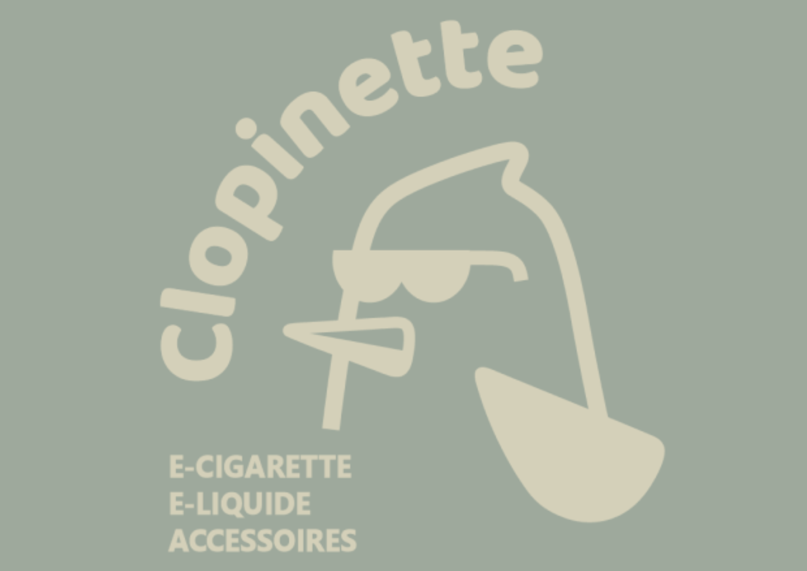
← Tous les projets

Identité visuelle
Racines
L'atelier des cheveux texturés
Sept heures pour répondre à un appel d'offre : identité de marque, analyse du marché, enquête terrain et stratégie de lancement pour un salon de coiffure qui ouvre à Rouen et au Havre.
Le brief
Un appel d'offre, sept heures
Le sujet posait un cadre volontairement vide. Vous êtes freelance. Un salon de coiffure ouvre à Rouen et au Havre, et lance un appel d'offre pour son lancement. Rien d'autre : ni spécificité, ni nom, ni valeur ajoutée. Tout ce que le salon allait devenir restait à décider, et c'est précisément ce qui rendait l'exercice intéressant.
Sept heures
Un partiel, en temps limité : il fallait trancher vite et tenir la ligne.
Deux villes
Rouen et Le Havre, donc deux marchés à regarder et deux concurrences.
Une page blanche
Aucun positionnement donné : la première décision était de le choisir.
Le positionnement
Un salon pour les cheveux texturés
Un salon de plus n'a aucune raison d'exister. J'ai donc cherché ce qui manquait sur ces deux villes, et la réponse était nette : personne ne s'adresse vraiment aux cheveux texturés, de l'ondulé au crépu. Ces textures sont mal servies, mal comprises, souvent renvoyées au lissage. C'est devenu le positionnement de la marque, résumé en une phrase qui a tenu tout le dossier : on révèle, on ne dompte pas.
De là est venu le nom, Racines, et sa signature, l'atelier des cheveux texturés. Le mot dit à la fois la repousse et l'origine, ce qu'on est avant de le corriger.
L'analyse
Regarder avant de proposer
Avant de dessiner quoi que ce soit, deux temps d'étude. D'abord une veille concurrentielle sur trois salons, WILD, Christop'Hair à Rouen et le Salon Raphaëlle au Havre, analysés sur leur positionnement, leur cible, leur direction artistique, leur communication et leur rapport aux cheveux texturés. La dernière ligne du tableau, c'est le salon à créer : elle montre la place restée libre.
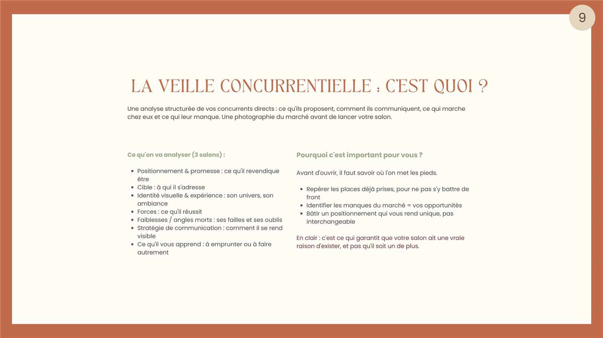
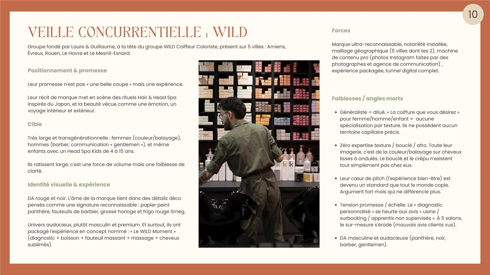
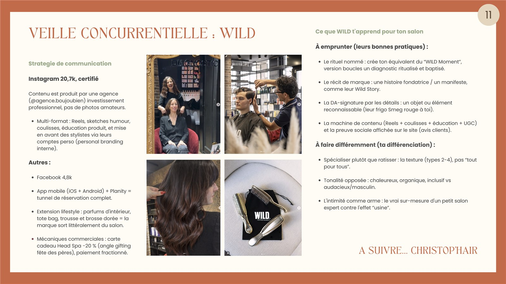
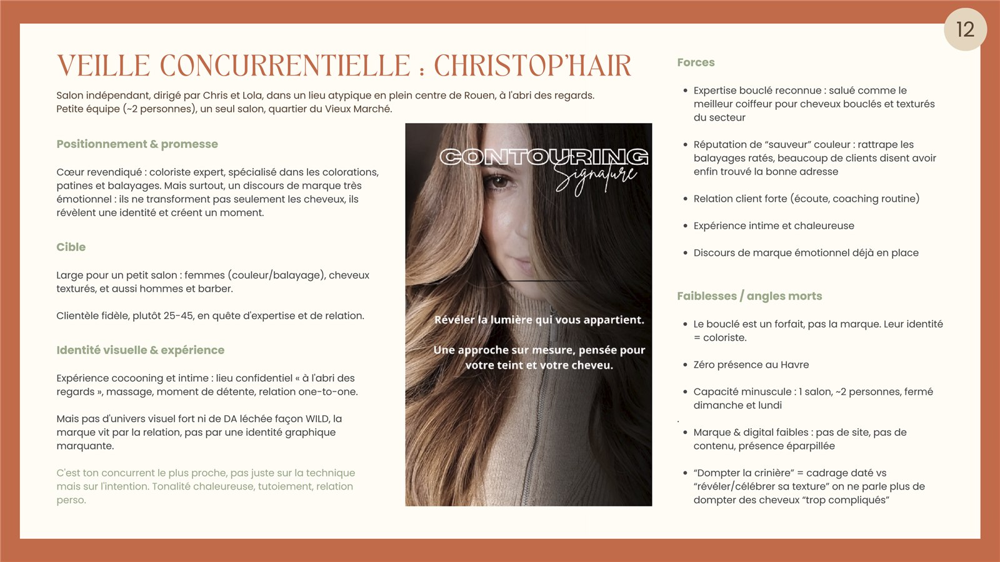
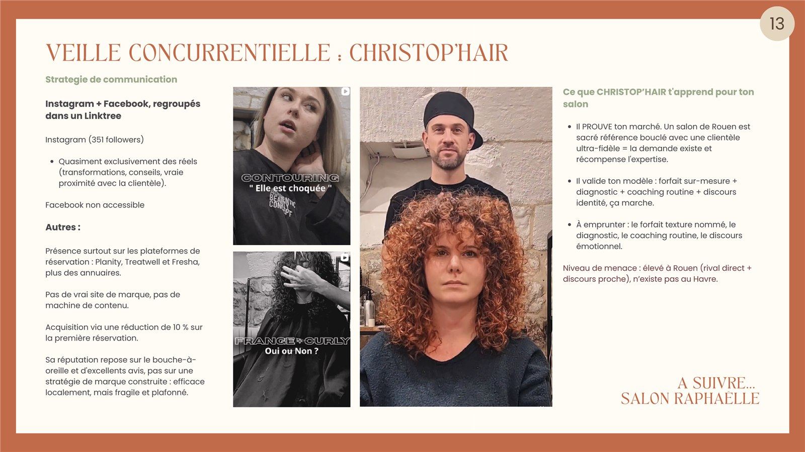
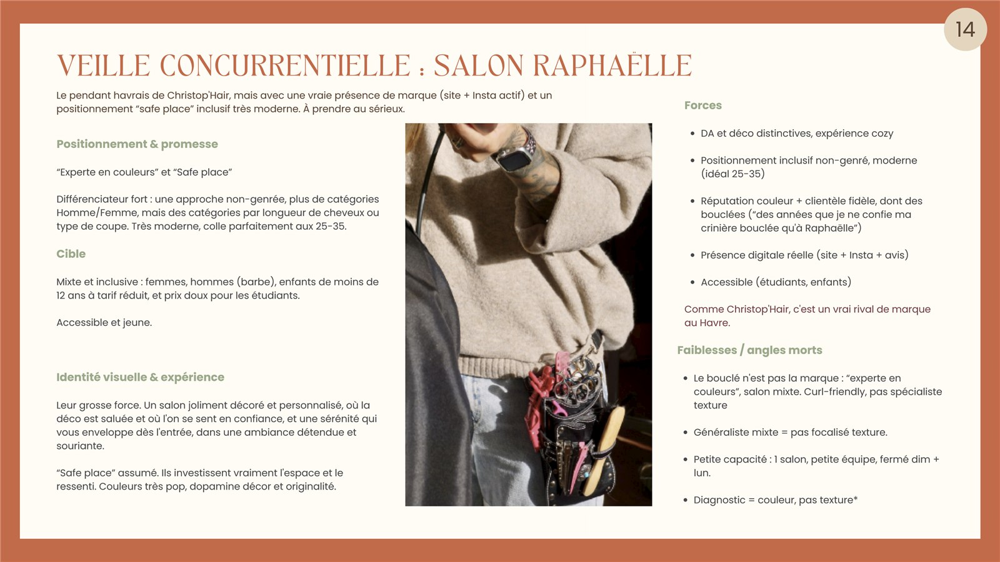
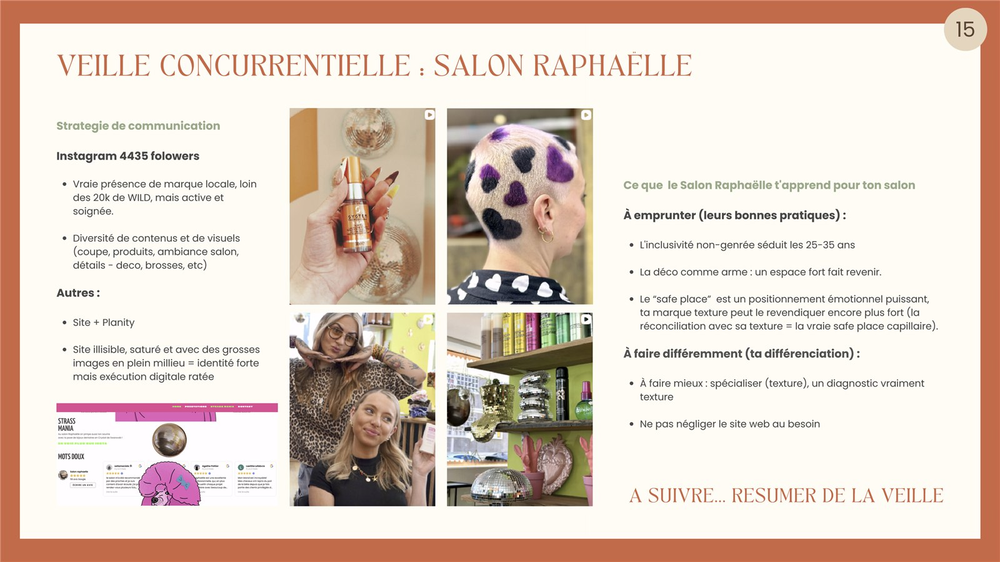
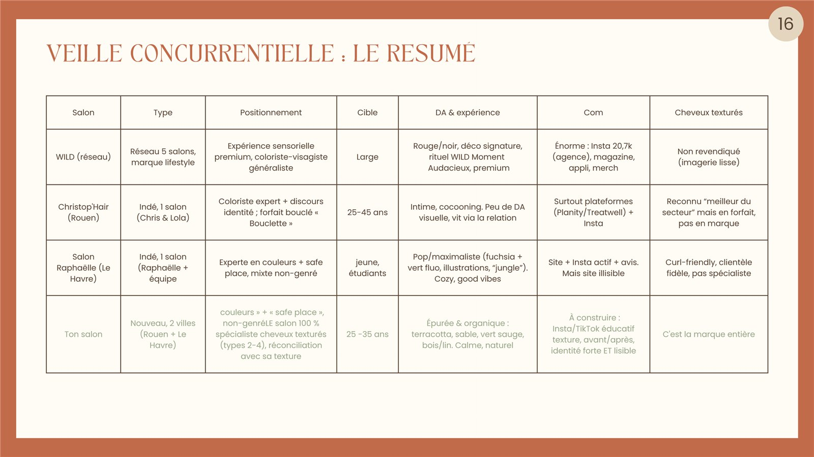
L'enquête terrain
Plutôt que de partir d'intuitions, j'ai fait un questionnaire auprès de la cible, des personnes de 25 à 35 ans aux cheveux texturés. L'échantillon reste modeste, sept réponses en temps limité : c'est une étude qualitative, pas un sondage. Mais les réponses vont toutes dans le même sens, et ce sont elles qui ont orienté la proposition.
- 5 sur 7 ont déjà renoncé à un rendez-vous par peur du résultat
- 5 sur 7 se sont entendu dire de lisser ou de dompter leurs cheveux
- 5 sur 7 se jugent mal conseillées, note de 1 sur 5
- 6 sur 7 citent le diagnostic-conseil comme premier facteur de confiance
Le constat est net : le problème n'est pas leur texture, c'est l'offre.
Outils
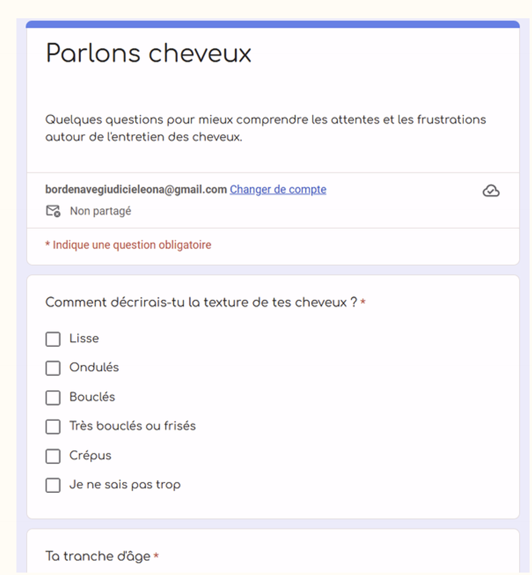
La marque
Un mot : la texture
Toute la direction artistique part de là. Des matières brutes et chaleureuses, du bois, du lin, de la terre cuite, du végétal. Rien de lisse, rien de clinique : l'univers devait donner envie de toucher.
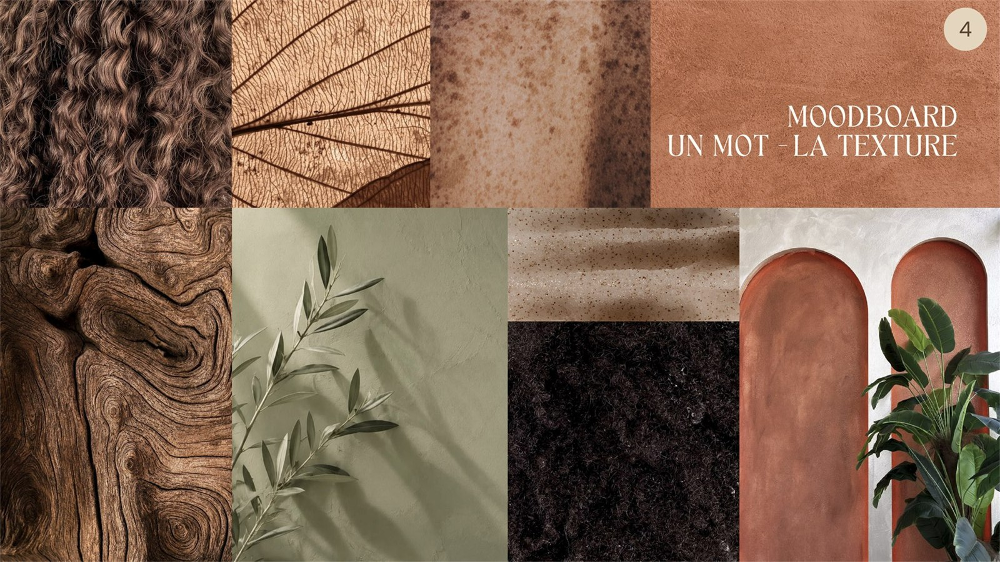
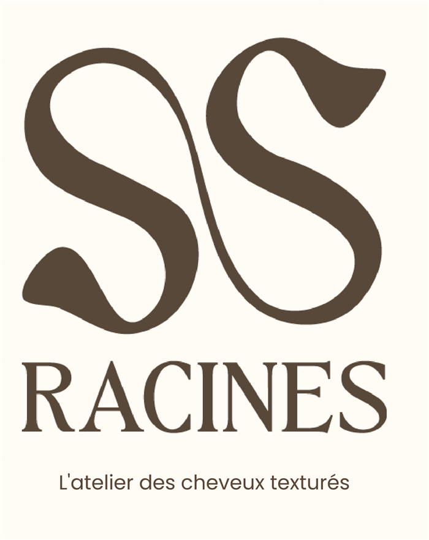
Le logo
Deux formes organiques qui s'entrelacent, comme deux boucles en mouvement. Ni rigides ni mécaniques : leurs courbes pleines évoquent le volume et la vitalité du cheveu texturé, une matière vivante. Leurs extrémités effilées rappellent la feuille et la pousse, en écho au nom.
Le nom est posé en TAN Angleton, un serif qui apporte le caractère et l'intemporalité, en capitales espacées pour l'assise. La signature est en Poppins, lisible et accessible : on comprend tout de suite la spécialité. Ce contraste serif et sans-serif résume la marque, raffinée mais accessible.
Outils

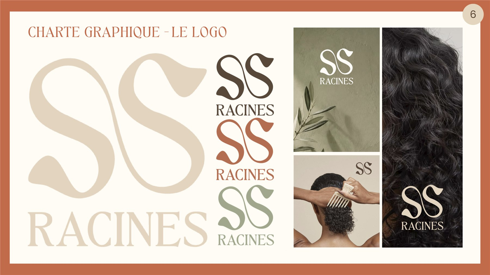
La palette
Terracotta #C26B4A
Couleur principale. La terre cuite, la chaleur, le soin. C'est l'âme de la marque, elle porte l'identité.
Vert sauge #9CA98B
Couleur secondaire. Le végétal, l'apaisement. Elle signale les valeurs soin et nature.
Écorce #5B4636
Texte et profondeur. Un brun chaleureux, jamais un noir pur, pour les contrastes.
Sable #E4D5BE
Neutre chaud. Les matières brutes, le lin et le bois clair. Le liant entre les teintes.
Crème #FFFCF5
Fond principal. La lumière, la respiration : la base claire de tout l'univers.
La proposition
Première proposition : le Diagnostic Boucle offert
L'enquête est sans appel : ces personnes n'osent plus aller chez le coiffeur. C'est à cette peur que répond l'offre de lancement. Vingt minutes avec un ou une experte, sur la texture, les besoins, la routine, sans engagement et avant tout acte technique. Le premier facteur de confiance cité était le diagnostic-conseil, à six réponses sur sept : l'offre donne exactement ce qui était réclamé. La peur tombe, le salon prouve sa compétence dès la porte.
Outils

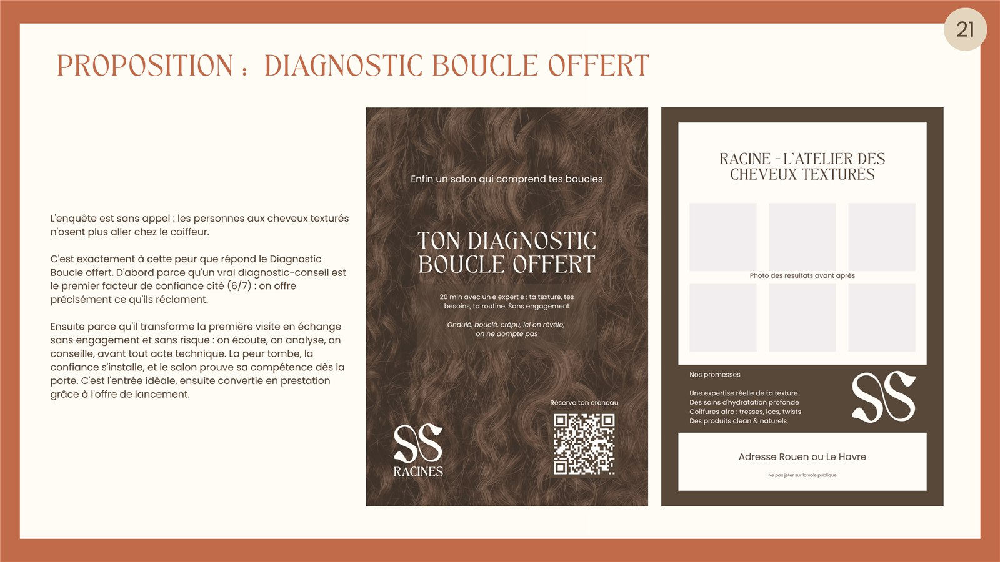
Deuxième proposition : le feed Instagram
La cible a 25 à 35 ans : avant de pousser la porte d'un salon, elle le découvre sur Instagram. Et l'enquête est formelle, ce qui rassure le plus, ce sont les photos de résultats sur des cheveux similaires aux siens. Le feed doit donc faire une chose avant tout : prouver en image qu'on maîtrise réellement cette texture.
Trois piliers de contenu s'alternent. La texture, avec les avant-après du ondulé au crépu, qui est la preuve. L'expertise, avec les conseils, les routines et le Diagnostic Boucle. Et les détails, la déco, les gestes, une main dans les boucles, qui installent l'univers.
Outils

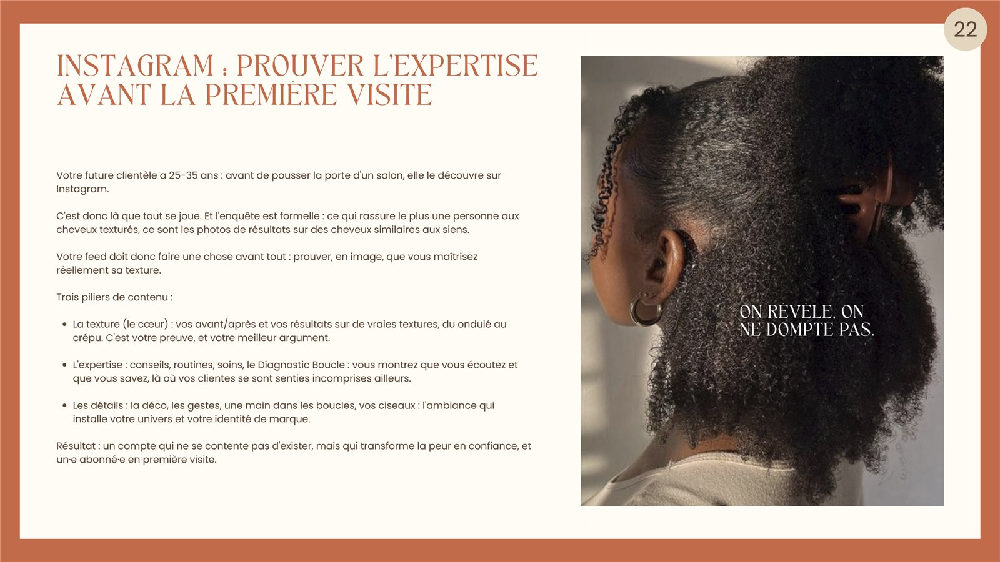
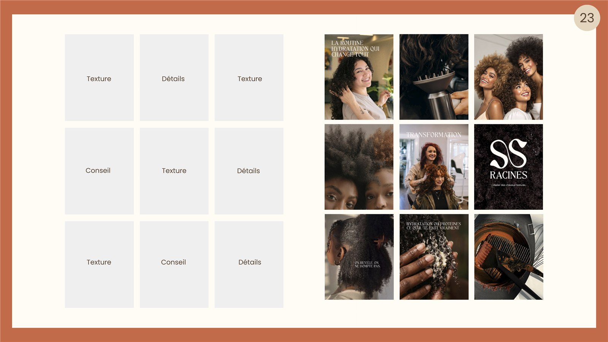
Le mot de la fin
Ce que le projet m'a appris
D'abord à travailler en temps réduit : sept heures pour un dossier complet, ça oblige à décider vite et à s'y tenir. Mais surtout, ce projet m'a appris à ne pas me lancer tout de suite dans le concret. Faire de la veille, de la recherche et une enquête avant de dessiner quoi que ce soit, c'est ce qui a donné au salon une vraie raison d'exister au lieu d'une jolie identité posée sur rien.
Projet suivant